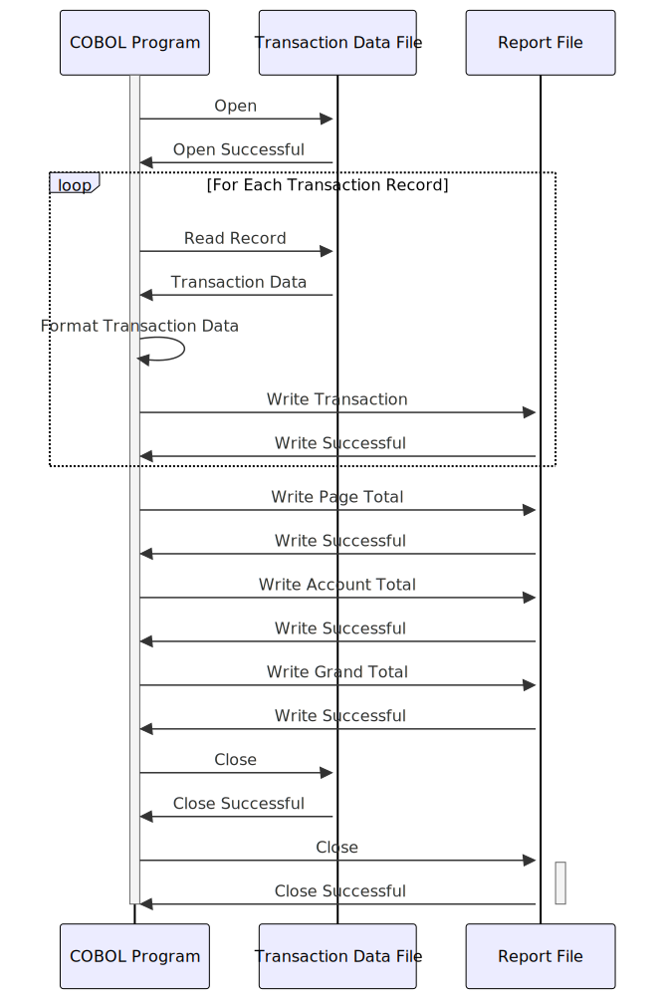

Gerado em: 1º de outubro de 2024
Título do Documento: Especificação de Layout do Relatório de Transação de Cartão
Descrição Resumida: Este documento descreve a estrutura e o conteúdo de um relatório de transações diárias para um sistema de cartão de crédito. O relatório fornece um resumo claro e organizado de todas as transações dentro de um intervalo de datas especificado.
Histórias do Usuário: Como analista de dados, preciso gerar um relatório de transações diárias que exiba todas as transações dentro de um intervalo de datas específico em um formato claro e organizado, para que eu possa analisar padrões de transações e identificar quaisquer anomalias.
Épico Relacionado: 5 - Relatórios e Análise
Requisitos Técnicos:
dailytran.txt.CVTRA07Y.cpy.DD/MM/AAAAR$#,###,###.##Modelos Relacionados:
Transaction: Representa um único registro de transação.
TRAN-REPORT-TRANS-ID String: Identificador exclusivo para cada transação.TRAN-REPORT-ACCOUNT-ID String: Identificador da conta associada à transação.TRAN-REPORT-TYPE-CD String: Código que representa o tipo de transação.TRAN-REPORT-TYPE-DESC String: Descrição do tipo de transação.TRAN-REPORT-CAT-CD String: Código que representa a categoria da transação.TRAN-REPORT-CAT-DESC String: Descrição da categoria da transação.TRAN-REPORT-SOURCE String: Origem ou canal da transação.TRAN-REPORT-AMT Decimal: Valor da transação.Configurações:
REPORT-NAME-HEADER: Define a seção de cabeçalho do relatório.
REPT-SHORT-NAME: 'DALYREPT'REPT-LONG-NAME: 'Relatório Diário de Transações'REPT-DATE-HEADER: 'Intervalo de Datas: 'TRANSACTION-HEADER-1: Define os cabeçalhos das colunas para a seção de detalhes da transação.TRANSACTION-HEADER-2: Define um separador visual para o cabeçalho.Melhorias de Código:
Melhorias de Segurança:
Diagrama Conceitual:
–Made by “Smart Engineering” (by Compass.UOL)–